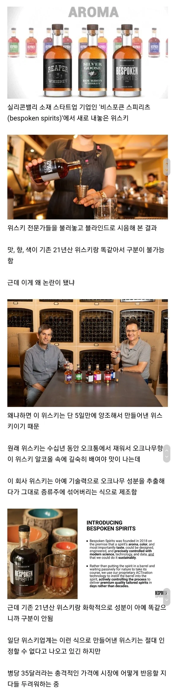

단 5일만에 양조 가능한 위스키 논란.jpg
댓글
그냥 증류주에 향 탄게 35달러면 그렇게 싸다고 생각 안드는데
2021년산급 위스키 답네
10년산에 미원타면 21년산과 비슷하다는 소리같은건가
그래서 지금 마트에서 뭐 사러 가야대?
이 글은 올라올 때 마다 의견이 분분한게
말만 좋지 먹어보니 쓰레기임->최근에는 좋아졌더라->그래도 쓰레기임-> 괜찮던데?
반복이라
랩다이아몬드 생각난다

그냥 증류주에 향 탄게 35달러면 그렇게 싸다고 생각 안드는데
2021년산급 위스키 답네
10년산에 미원타면 21년산과 비슷하다는 소리같은건가
그래서 지금 마트에서 뭐 사러 가야대?
이 글은 올라올 때 마다 의견이 분분한게
말만 좋지 먹어보니 쓰레기임->최근에는 좋아졌더라->그래도 쓰레기임-> 괜찮던데?
반복이라
랩다이아몬드 생각난다
와일드 터키 101 가격인데 ㅋㅋ
한 15달러에 냈으면 사람들이 마셔봤을듯